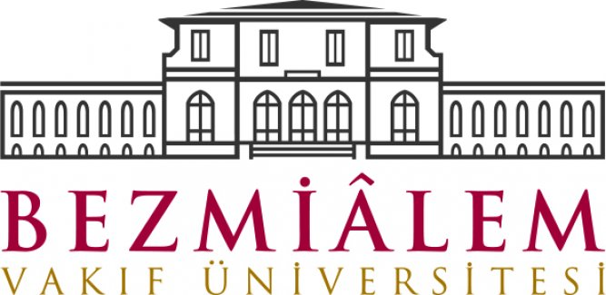

<div class="ortaic">
    <div class="ortayazi">
        <strong>Kanunsuzlar Portal</strong>
        <p class="surum">8 KASIM 2017 - Bazı işler</p>
        <hr class="cizgi">
    <br>
    
    <div class="firma">
        <center>	
    <figure> 
        
        <figcaption><p>Sabancı Holding Kuruluşlarından <br> lassa,brisa,otopratik ve <br>bir kaç kuruluşun yönetim panellerine <br> girilmiştir açık rapor edilerek kapatılmıştır. <br>/ ekstrdan veritabanı sunucusuna girilmiştir. <br> </p> </figcaption>  
    </figure>  
    <figure> 
        
        <figcaption><p>Ensar vakfı sitesi üzerinde <br> güvenlik açıkları tespit ederek veritabanına erişilmiştir <br> kısa süre içerisinde <br>açık bildirilerek kapattırılmıştır. </p> </figcaption>  
    </figure>  
    <figure> 
        
        <figcaption><p>Bezmialem hastanesinin MR sistemine, <br>veritabanına girilmiş ve güvenlik açığı kapattırılmıştır  <br> </p> </figcaption>  
    </figure>  
    <figure> 
        
        <figcaption><p>Ulusal Siber Olaylarla Müdahele merkezine <br> devlet sistemlerinde bulunan açıklar <br> ile ilgili raporlar verilmiştir <br> bu sitelerin arasında TSK,Hastane <br> Otomasyonları,Mernis ile bağlantılı açıklar mevcuttur.</p> </figcaption>  
    </figure>  
    
    
    
    
    
    
    </center>
    </div>
    
    
    
    
    </div>
    </div>